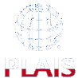

PLAIS Bulletin 40
Witam
Poniżej sprawozdanie z naszych działań w poprzedniej kadencji, przesłane w czerwcu AIS Vice President d/s SIGs & Chapters - Prof. Julie Kendall.
Dear Ms. Vice President,
Dear Julie,
Recently we had the election in PLAIS. Below please find: The PLAIS activity report of the operations of the Chapter for the preceding year:
=================================
Hereby, I would like to inform you that in May new PLAIS executive board was elected:
- Stanislaw Wrycza - President
- Beata Czarnacka-Chrobot - Treasurer
- Jacek Maslankowski - Secretary
Andrzej Kobylinski as the Past President remains the member of an Executive Board.
In the cadence 2010/2012 PLAIS was an co-organiser of:
- 2 domestic conferences TIAPISZ in Polish - IT in Administration and Healthcare
- 4th SIGSAND/PLAIS EuroSymposium in Gdansk ( http://eurosymposium.eu/ )
- 24th International Conference on Advanced Information Systems Engineering ( http://caise2012.univ.gda.pl/ )
The current activities of PLAIS were reported and announced in succeeding PLAIS Bulletins. Till now 39 of them were published - 12 in the recent cadence:
http://plais.org/newsb.php
===========================